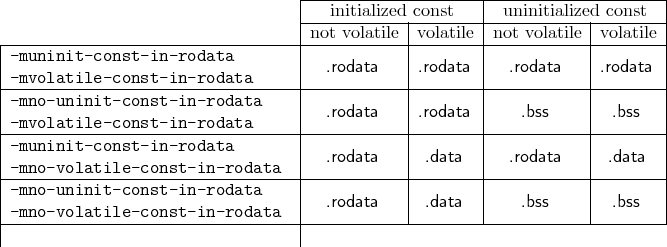

In C, const should not be modified during runtime. To save RAM, constants should be stored
in the Flash and not be copied to the RAM by the startup code. Constants, therefore, must not
be stored in the sections for variables.
- By default, constants are stored in the .rodata section.
- Apart from this, they can also be stored in the .sdata.rodata section for relative
addressing mode (-msmall) or in the .zrodata section for absolute addressable
constants (-mabs).
- Constants will never be stored in sections that contain the attribute ’w’.
- Uninitialised constants are assumed to be zero.
- Write access to a constant will issue a compiler warning.
- Per default 32 bit addressing is used for constants.
- The settings can be changed by:
- Compiler options -muninit-const-in-rodata,
-mno-uninit-const-in-rodata, -mvolatile-const-in-rodata and
-mno-volatile-in-rodata.
- Using __attribute__ for changing the addressing mode or the section.
- Using #pragma for changing the addressing mode or the section.
Note:
The above properties are also valid for constants that use volatile as
qualifier.
The options -muninit-const-in-rodata and -mvolatile-const-in-rodata are set by
default.
The following table illustrates the effect of using these options.

For constants which are to be adressed as absolute, the letter ’z’ must be added (e.g. .bss ®
.zbbs etc.).
For constants which are to be adressed as small, the letter ’s’ must be added (e.g. .bss ®.sbss
etc.). The .srodata section is renamed to .sdata.rodata.